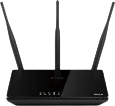
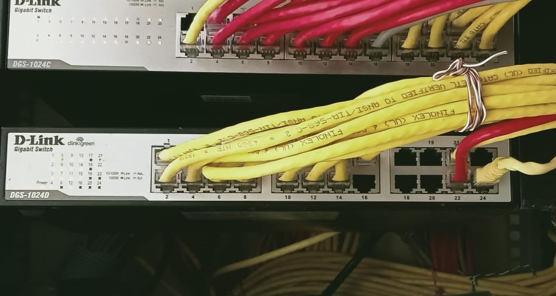
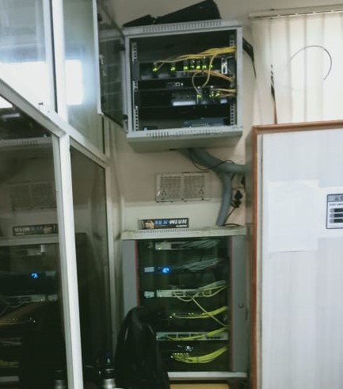
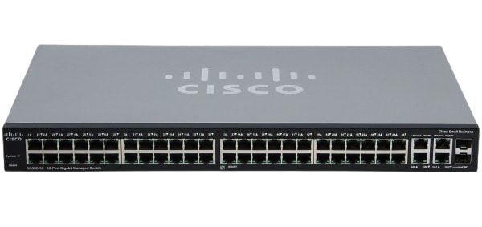

RISE KRISHNA SAI GANDHI GROUP OF INSTITUTIONS :: ONGOLE |
|  |  |  |
The RISE campuses have Wi-Fi facility. The facility acts as the best technological companion to the students. They are able to procure academic richness depending on the
global technological resources.The RISE students are provided with laptops and so from the day-1 they are in the real world of information and technology.
Academic lessons, practice exercises, model papers, references etc. are at the nearest reach to the students. The campuses with such a modern assistance will erase
all the limitations from which the students suffer.
|
|
|  |
|